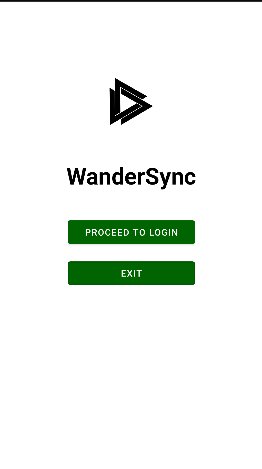
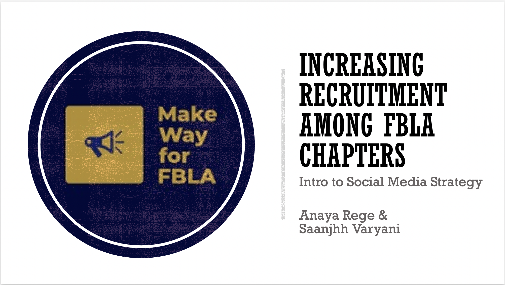

Projects
WanderSync: A Collaborative Travel Management System Showcase
• Aimed to simplify travel planning by enabling real-time collaboration and organization of itineraries
• Implemented a series of design patterns and methodologies including Agile, Scrum, SOLID/GRASP, and more
• Through iterative development across multiple sprints, we successfully implemented key features such as itinerary management, real-time updates, and collaborative tools, resulting in a robust and user-friendly application
View ProjectIncreasing Recruitment among FBLA Chapters
• Social media campaign highlighted through platforms in order to grow the membership of FBLA
• Integrated content creation within three main media platforms: Instagram, Snapchat, and Twitter
View ProjectDog Breed Temperament Analyzer
• Integrated Java and Dog API for a dog analysis app, allowing users to receive behavioral information on 100+ breeds
• Engineered an intuitive interface with JavaFX, creating a seamless user experience to display breed images and traits